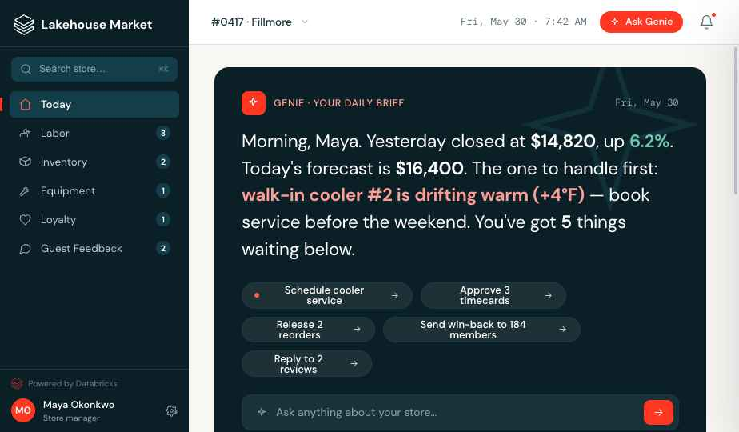
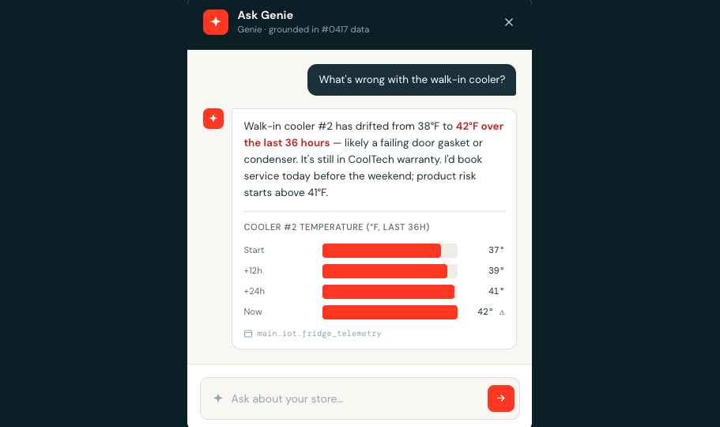
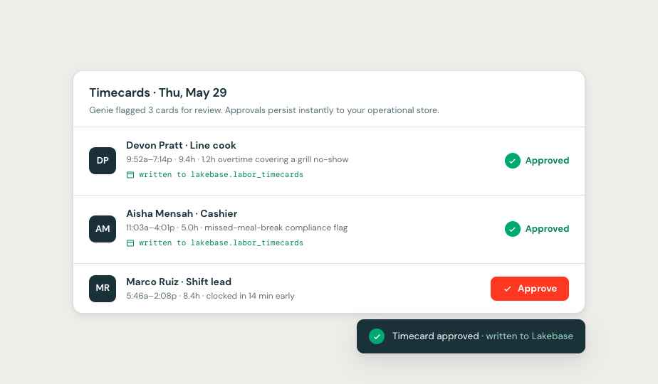

A working retail-operations app built on Databricks — where one store's live data becomes the morning's decisions, asked in plain language and turned into actions that commit straight back to the operational store.
Homebase puts a store's sales, labor, inventory, equipment, loyalty and guest feedback behind a single screen — and opens every morning with a Genie brief that names the one thing to handle first.


A manager types a question the way they'd ask a shift lead. Genie translates it into a query over governed tables and answers with the number, the why, and the next move.
main.iot.fridge_telemetry — so it's trusted, not a black box.Insight only counts when it turns into action. Every approval, purchase order, service booking and guest reply commits instantly to Lakebase — the operational database that runs alongside the analytics.

The two capabilities close a loop the manager never has to think about — analytics and operations on one platform, so a question becomes an insight becomes a decision becomes a record, and the next question lands sharper.